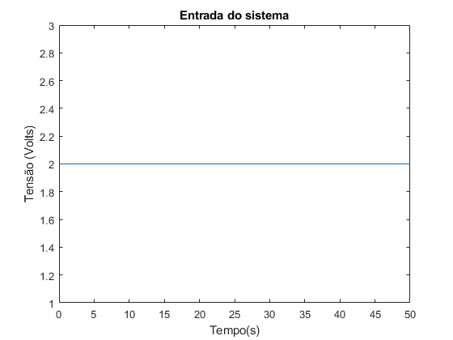
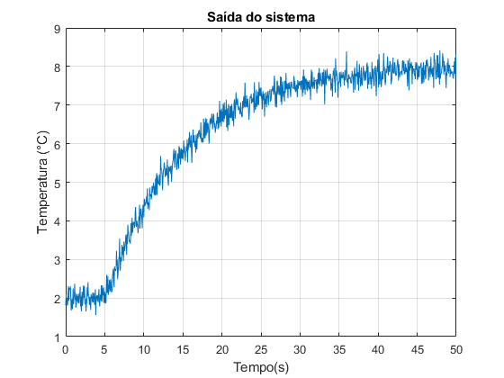
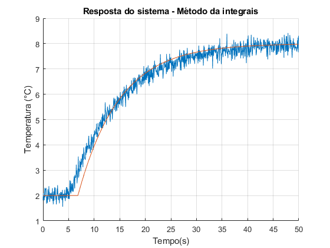
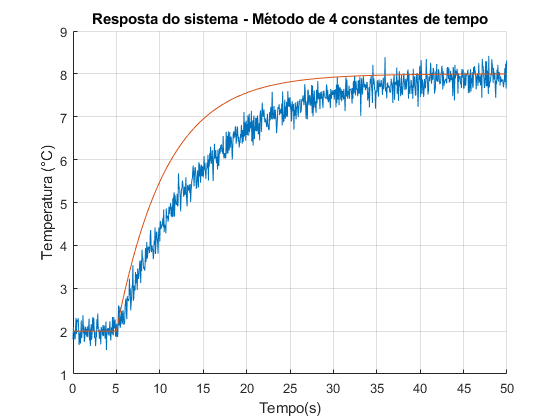
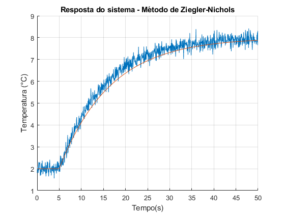
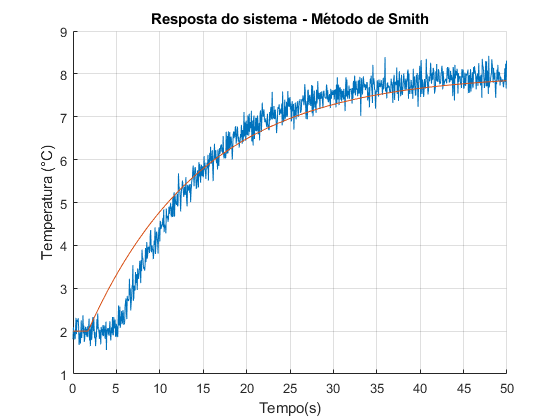
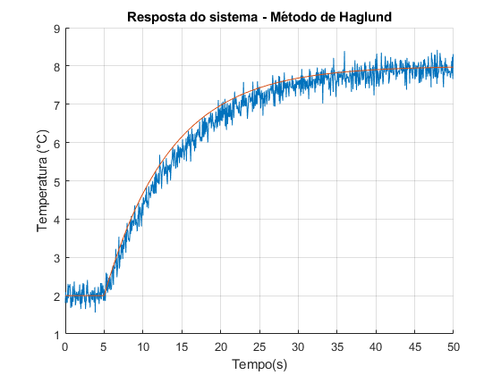
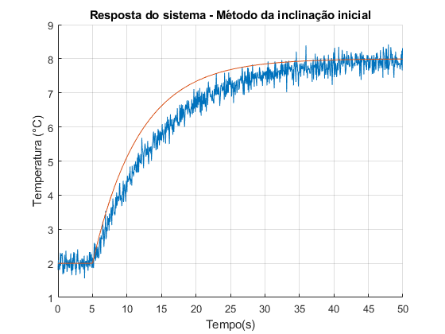

Laboratório de Sistemas Dinâicos
Prática 08 29/07/2024 Autores: Victor Hugo Daia Lorenzato e Whilker Henrique Santos Silva
Contents
- Limpar workspace
- Ex01 - importação dados
- Ex01 - Cálculo do Ganho
- Ex01 - Método da integrais
- Ex01 - Método de 1 constante de tempo
- Ex01 - Método de 4 constantes de tempo
- Ex01 - Método de Ziegler-Nichols
- Ex01 - Método de Smith
- Ex01 - Método de Haglund
- Ex01 - Método de Sundaresan e Krishnaswami
- Ex01 - Método da inclinação inicial;
- Ex01 - Comparação dos erros médios quadraticos
Limpar workspace
close all;
clear;
clc;
Ex01 - importação dados
data = load('dadosordem1.txt'); tempo = data(:,1); entrada = data(:,2); saida = data(:,3); plot(tempo, entrada); title("Entrada do sistema"); xlabel("Tempo(s)"); ylabel("Tensão (Volts)"); figure(); plot(tempo, saida); title("Saída do sistema"); xlabel("Tempo(s)"); ylabel("Temperatura (°C)"); grid("on"); 
Ex01 - Cálculo do Ganho
du = entrada(end) - 0;
dy = 8 - 2;
k = dy/du;
fprintf("Ganho dc do sistema é igual a %.2f °C/V \n", k);
Ganho dc do sistema é igual a 3.00 °C/V
Ex01 - Método da integrais
entrada_normalizada = entrada / 2; saida_normalizada = (saida - 2) / 6; Iu = cumtrapz(tempo, entrada_normalizada); Iy = cumtrapz(tempo, saida_normalizada); A1 = Iu(end) - Iy(end); i = 1; while(saida_normalizada(i) < 0.632) i = i + 1; end tau_a= Iy(i) * exp(1); theta_a = A1 - tau_a; fprintf("K = %.2f °C/V \n", k); fprintf("theta = %f segundos \n", theta_a); fprintf("tau = %f segundos \n", tau_a); s = tf('s'); Hs_a = (k*exp(- theta_a * s)) / (tau_a*s + 1); y_a = (2*step(Hs_a, tempo)) + 2; figure(); hold("on"); plot(tempo, saida); plot(tempo, y_a); title("Resposta do sistema - Método da integrais"); xlabel("Tempo(s)"); ylabel("Temperatura (°C)"); grid("on"); erro_a = 0; for i = 1: 1: 1000 erro_a = erro_a + (saida(i) - y_a(i))^2; end erro_a = erro_a/1000;
K = 3.00 °C/V theta = 6.822068 segundos tau = 8.055515 segundos
Ex01 - Método de 1 constante de tempo
theta_b = 5; tau_b = 15 - theta_b; Hs_b = (k*exp(- theta_b * s)) / (tau_b*s + 1); y_b = (2*step(Hs_b, tempo)) + 2; fprintf("K = %.2f °C/V \n", k); fprintf("theta = %f segundos \n", theta_b); fprintf("tau = %f segundos \n", tau_b); figure(); hold("on"); plot(tempo, saida); plot(tempo, y_b); title("Resposta do sistema - Método de 1 constante de tempo"); xlabel("Tempo(s)"); ylabel("Temperatura (°C)"); grid("on"); erro_b = 0; for i = 1: 1: 1000 erro_b = erro_b + (saida(i) - y_b(i))^2; end erro_b = erro_b/1000;
K = 3.00 °C/V theta = 5.000000 segundos tau = 10.000000 segundos
Ex01 - Método de 4 constantes de tempo
theta_c = 5; tau_c = 43/4 - theta_c; Hs_c = (k*exp(- theta_c * s)) / (tau_c*s + 1); y_c = (2*step(Hs_c, tempo)) + 2; fprintf("K = %.2f °C/V \n", k); fprintf("theta = %f segundos \n", theta_c); fprintf("tau = %f segundos \n", tau_c); figure(); hold("on"); plot(tempo, saida); plot(tempo, y_c); title("Resposta do sistema - Método de 4 constantes de tempo"); xlabel("Tempo(s)"); ylabel("Temperatura (°C)"); grid("on"); erro_c = 0; for i = 1: 1: 1000 erro_c = erro_c + (saida(i) - y_c(i))^2; end erro_c = erro_c/1000;
K = 3.00 °C/V theta = 5.000000 segundos tau = 5.750000 segundos
Ex01 - Método de Ziegler-Nichols
theta_d = 5; tau_d = 16.5 - theta_d; Hs_d = (k*exp(- theta_d * s)) / (tau_d*s + 1); y_d = (2*step(Hs_d, tempo)) + 2; fprintf("K = %.2f °C/V \n", k); fprintf("theta = %f segundos \n", theta_d); fprintf("tau = %f segundos \n", tau_d); figure(); hold("on"); plot(tempo, saida); plot(tempo, y_d); title("Resposta do sistema - Método de Ziegler-Nichols"); xlabel("Tempo(s)"); ylabel("Temperatura (°C)"); grid("on"); erro_d = 0; for i = 1: 1: 1000 erro_d = erro_d + (saida(i) - y_d(i))^2; end erro_d = erro_d/1000;
K = 3.00 °C/V theta = 5.000000 segundos tau = 11.500000 segundos
Ex01 - Método de Smith
t1 = 6.15; t2 = 15; tau_e = 1.5 * (t2-t1); theta_e = t2 - tau_e; Hs_e = (k*exp(- theta_e * s)) / (tau_e*s + 1); y_e = (2*step(Hs_e, tempo)) + 2; fprintf("K = %.2f °C/V \n", k); fprintf("theta = %f segundos \n", theta_e); fprintf("tau = %f segundos \n", tau_e); figure(); hold("on"); plot(tempo, saida); plot(tempo, y_e); title("Resposta do sistema - Método de Smith"); xlabel("Tempo(s)"); ylabel("Temperatura (°C)"); grid("on"); erro_e = 0; for i = 1: 1: 1000 erro_e = erro_e + (saida(i) - y_e(i))^2; end erro_e = erro_e/1000;
K = 3.00 °C/V theta = 1.725000 segundos tau = 13.275000 segundos
Ex01 - Método de Haglund
theta_f = 5; tau_f = 13.5 - theta_f; Hs_f = (k*exp(- theta_f * s)) / (tau_f*s + 1); y_f = (2*step(Hs_f, tempo)) + 2; fprintf("K = %.2f °C/V \n", k); fprintf("theta = %f segundos \n", theta_f); fprintf("tau = %f segundos \n", tau_f); figure(); hold("on"); plot(tempo, saida); plot(tempo, y_f); title("Resposta do sistema - Método de Haglund"); xlabel("Tempo(s)"); ylabel("Temperatura (°C)"); grid("on"); erro_f = 0; for i = 1: 1: 1000 erro_f = erro_f + (saida(i) - y_f(i))^2; end erro_f = erro_f/1000;
K = 3.00 °C/V theta = 5.000000 segundos tau = 8.500000 segundos
Ex01 - Método de Sundaresan e Krishnaswami
t1 = 9.15; t2 = 24.1; tau_g = 0.67 * (t2 - t1); theta_g = 1.3 * t1 - 0.29 * t2; Hs_g = (k*exp(- theta_g * s)) / (tau_g*s + 1); y_g = (2*step(Hs_g, tempo)) + 2; fprintf("K = %.2f °C/V \n", k); fprintf("theta = %f segundos \n", theta_g); fprintf("tau = %f segundos \n", tau_g); figure(); hold("on"); plot(tempo, saida); plot(tempo, y_g); title("Resposta do sistema - Método de Sundaresan"); xlabel("Tempo(s)"); ylabel("Temperatura (°C)"); grid("on"); erro_g = 0; for i = 1: 1: 1000 erro_g = erro_g + (saida(i) - y_g(i))^2; end erro_g = erro_g/1000;
K = 3.00 °C/V theta = 4.906000 segundos tau = 10.016500 segundos
Ex01 - Método da inclinação inicial;
ya = 2; yb = 4.75; xa = 5; xb = 10; m = (yb - ya) / (xb - xa); theta_h = 5; tau_h = 1/m + theta_h; Hs_h = (k*exp(- theta_h * s)) / (tau_h*s + 1); y_h = (2*step(Hs_h, tempo)) + 2; fprintf("K = %.2f °C/V \n", k); fprintf("theta = %f segundos \n", theta_h); fprintf("tau = %f segundos \n", tau_h); figure(); hold("on"); plot(tempo, saida); plot(tempo, y_h); title("Resposta do sistema - Método da inclinação inicial"); xlabel("Tempo(s)"); ylabel("Temperatura (°C)"); grid("on"); erro_h = 0; for i = 1: 1: 1000 erro_h = erro_h + (saida(i) - y_h(i))^2; end erro_h = erro_h/1000;
K = 3.00 °C/V theta = 5.000000 segundos tau = 6.818182 segundos
Ex01 - Comparação dos erros médios quadraticos
fprintf("Erro método da instegrais: %f \n", erro_a); fprintf("Erro método de 1 constante de tempo: %f \n", erro_b); fprintf("Erro método de 4 constantes de tempo: %f \n", erro_c); fprintf("Erro método de Ziegler-Nichols: %f \n", erro_d); fprintf("Erro método de Smith: %f \n", erro_e); fprintf("Erro método de Haglund: %f \n", erro_f); fprintf("Erro método de Sundaresan: %f \n", erro_g); fprintf("Erro método da inclinação inicial: %f \n \n", erro_h); fprintf("Conforme pode ser observado pela comparação dos erros médios quadraticos \n" + ... "os metodos que apresentaram resultasdos mais satisfatórios foram respectivamente: \n" + ... "Método de uma constante de tempo e Sundaresan", erro_h);
Erro método da instegrais: 0.091889 Erro método de 1 constante de tempo: 0.038529 Erro método de 4 constantes de tempo: 0.452999 Erro método de Ziegler-Nichols: 0.076013 Erro método de Smith: 0.182573 Erro método de Haglund: 0.082306 Erro método de Sundaresan: 0.039057 Erro método da inclinação inicial: 0.255838 Conforme pode ser observado pela comparação dos erros médios quadraticos os metodos que apresentaram resultasdos mais satisfatórios foram respectivamente: Método de uma constante de tempo e Sundaresan